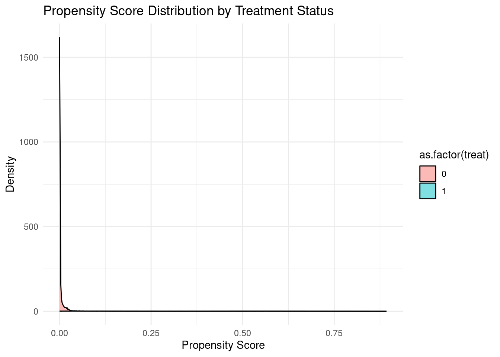
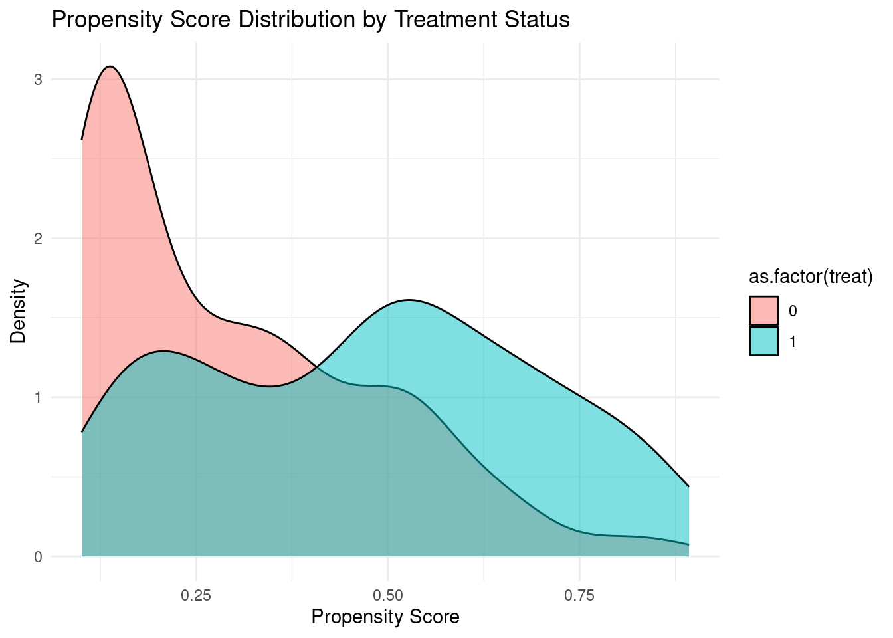
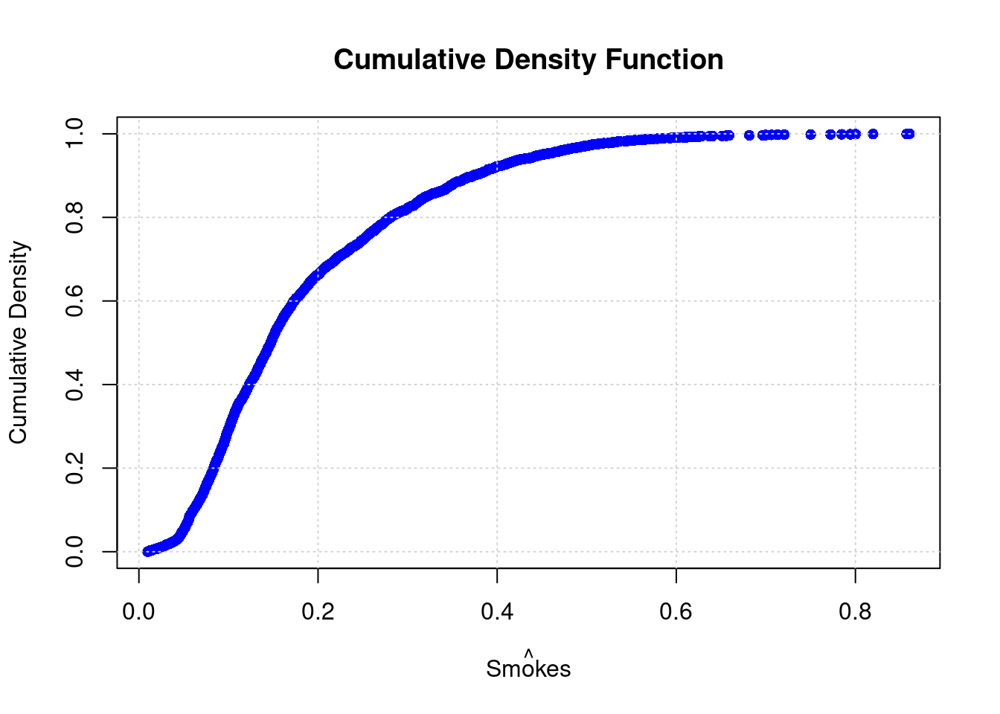
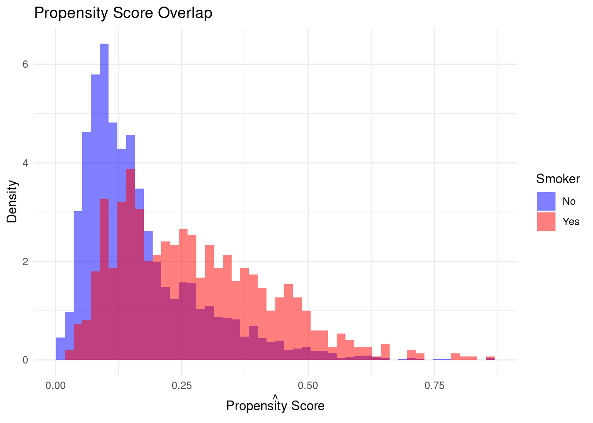
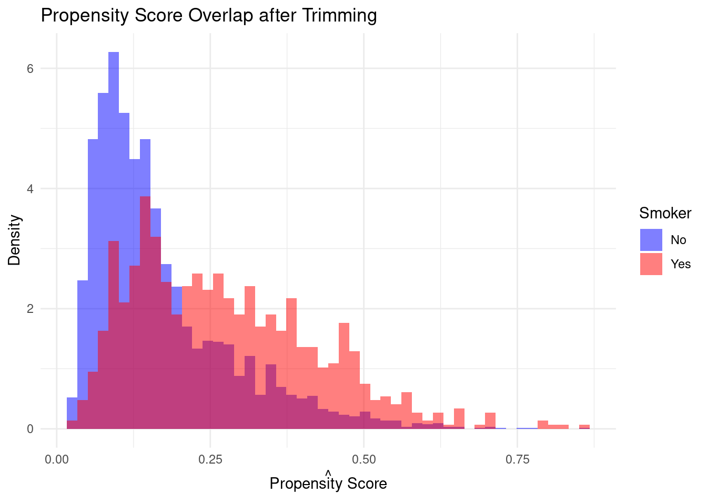
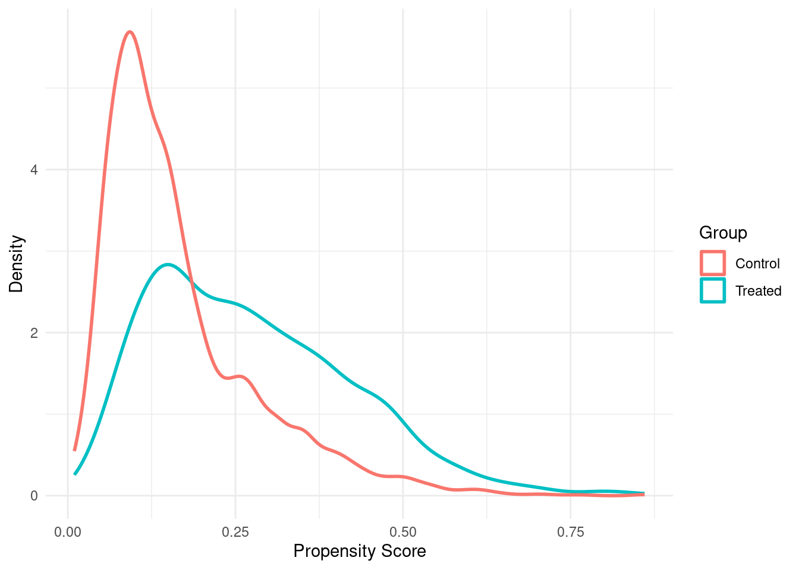
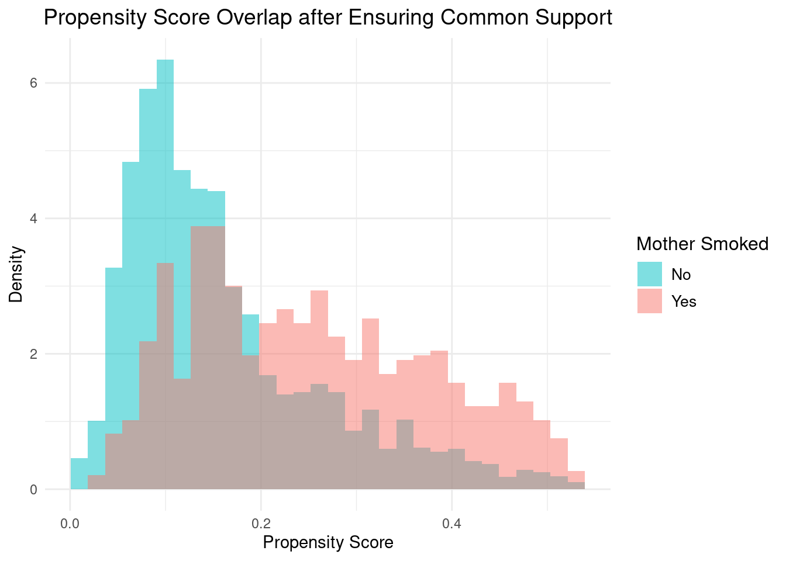
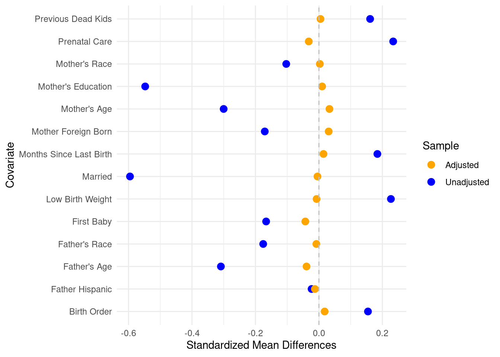
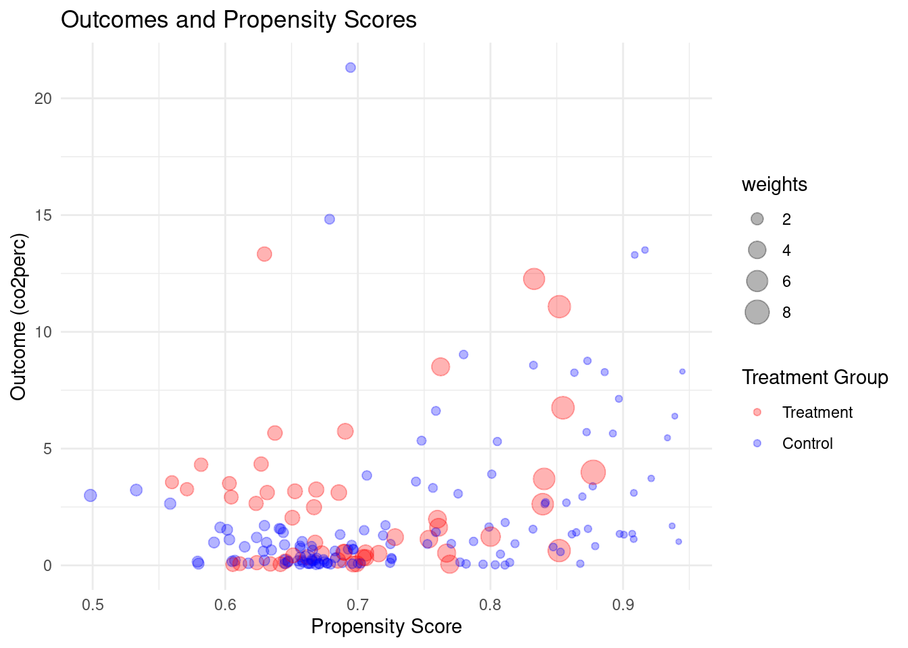

Code Call-out 3.1 - Propensity Score Matching and Job Training Programs
In this code call-out we will consider a setting originally studied by LaLonde (1986). LaLonde (1986) examines the experimental analysis of the National Supported Work (NSW) experiment. This was an experimentally evaluated work training program in which individuals were (randomly) assigned to treated groups which participated in the approximately 12 month long program, and a control group in which units were assigned to a control condition. Because there is an experimental evaluation, the effect of treatment is known, and LaLonde (1986) sought to document how the effect estimated from observational estimators in which the NSW treated group is compared to “control” groups drawn from large surveys. LaLonde (1986) documents that often these observational methods did quite poorly in approximating the true treatment effect.
This example was revisited by Dehejia and Wahba (2002), Dehejia and Wahba (1999). In this case, the authors consider the same treated group from the experiment, and estimate treatment effects matching it to a control group drawn from the same large surveys (specifically, the CPS and PSID from the United States). They note that when a propensity score matching procedure is used and when matching is based on a series of variables including salaries in the pre-treatment period, the observational methods actually do a reasonably good job in approximating the true experimental estimate. Here we use the same data from Dehejia and Wahba (2002), seeking to replicate their Table 2 which shows how estimates vary based on the particular nature of propensity score matching used. In particular, they consider a range of nearest neighbour methods without replacement, as well as methods with replacement, and with calipers of varying sizes.
Below we will open the data provided by Dehejia and Wahba (2002) and begin working with it. These data actually consist of both the NSW experimental implementation (marked as data_id="Dehejia-Wahba Sample"), as well as the survey data (marked as data_id="CPS1"). Among the NSW sample, there will be both treated and control units (indicated by treat), whereas among the CPS data, there will be no treated units. Our goal will then be to discard the control units from the NSW sample, and seek to generate a control group using propensity score matching. Along with information on individuals’ participation in the program (treat), the dataset contains information about their earnings in 1978 (re78) which follows program participation (in the case of treated observations), and several other covariates such as age, education, race, marital status, and earnings in 1974 and 1975 (pre-treatment outcomes). Below we will open these data, and generate two samples: the original “experimental” sample based on the NSW, and the new sample consisting of both treated units, and survey data which we will use to try to generate our matched controls:
library(haven)library(dplyr)
Attaching package: 'dplyr'
The following objects are masked from 'package:stats':
filter, lag
The following objects are masked from 'package:base':
intersect, setdiff, setequal, union
library(ggplot2)# Cargar los datosdf <-read_dta("data/Dehejia_Wahba_2002.dta")# Crear las variables necesariasdf <- df %>%mutate(age2 = age^2,age3 = age^3,education2 = education^2,educationXre74 = education * re74,unemp74 =ifelse(re74 ==0, 0, 1),unemp75 =ifelse(re75 ==0, 0, 1) )# Subconjuntos de datos observacionales y experimentalesobs <- df %>%filter(data_id =='CPS1'| treat ==1)exp <- df %>%filter(data_id =='Dehejia-Wahba Sample')
Along with these two samples which we have generated as exp (experimental) and obs (observational) above, we have also generated a number of additional variables based on those available in the data which were used in Dehejia and Wahba (2002)’s calculation of the propensity score.
Now, using the observational data above, we will estimate the propensity score. We will do this using the same variables and procedure described in the note to Table 2 from Dehejia and Wahba (2002), which results in the variable pscore below. As we are only doing this with the observational data, we are using the obs dataframe below. Finally, we examine the propensity score by the actual treatment value below.
Call:
glm(formula = treat ~ . - 1, family = binomial, data = obs[,
c("treat", xvars)])
Coefficients:
Estimate Std. Error z value Pr(>|z|)
age -8.092e-01 1.216e-01 -6.653 2.88e-11 ***
age2 3.890e-02 5.338e-03 7.288 3.15e-13 ***
age3 -5.311e-04 7.197e-05 -7.379 1.60e-13 ***
education 4.020e-01 1.749e-01 2.299 0.02150 *
education2 -3.114e-02 9.952e-03 -3.129 0.00176 **
married -1.405e+00 2.536e-01 -5.541 3.00e-08 ***
nodegree 3.931e-01 3.051e-01 1.288 0.19759
black 3.926e+00 2.536e-01 15.478 < 2e-16 ***
hispanic 1.578e+00 3.925e-01 4.020 5.81e-05 ***
re74 -1.283e-04 9.177e-05 -1.398 0.16213
re75 -1.913e-04 3.660e-05 -5.226 1.73e-07 ***
unemp74 -1.509e+00 2.716e-01 -5.556 2.77e-08 ***
unemp75 -1.801e-01 2.416e-01 -0.746 0.45589
educationXre74 1.512e-05 7.411e-06 2.040 0.04132 *
---
Signif. codes: 0 '***' 0.001 '**' 0.01 '*' 0.05 '.' 0.1 ' ' 1
(Dispersion parameter for binomial family taken to be 1)
Null deviance: 22426.08 on 16177 degrees of freedom
Residual deviance: 888.74 on 16163 degrees of freedom
AIC: 916.74
Number of Fisher Scoring iterations: 11
obs$pscore <-predict(logit_model, type ="response")summary(obs$pscore)
Min. 1st Qu. Median Mean 3rd Qu. Max.
0.000e+00 3.059e-05 1.481e-04 1.158e-02 1.267e-03 8.928e-01
# Examine propensity score by treatmentggplot(obs, aes(x = pscore, fill =as.factor(treat))) +geom_density(alpha =0.5) +labs(title ="Propensity Score Distribution by Treatment Status",x ="Propensity Score", y ="Density") +theme_minimal()

Unsurprisingly, we see that there is substantial mass at 0 among the untreated units. While it is somewhat difficult to observe overlap fully given that there are many more observations in the CPS than in the NSW experiment, we could explore more, for example looking at densities outside the very lowest values to ensure that effectively there are values of the propensity score in the CPS which are similar to those among (treated) NSW units, which suggests a more reasonable overlap, though, of course, there is relatively less mass at the upper end of the propensity score distribution among control units to match to treated units.
ggplot(obs %>%filter(pscore >0.1), aes(x = pscore, fill =as.factor(treat))) +geom_density(alpha =0.5) +labs(title ="Propensity Score Distribution by Treatment Status",x ="Propensity Score", y ="Density") +theme_minimal()

Nearest Neighbour Matching without Replacement
We will now get into the business of matching to generate the ATT based on this propensity score. We will start by considering nearest neighbour matching without replacement. Below we will generate a function nearest_neighbour which accepts as arguments a dataframe, as well as a variable indicating whether units are treated or control, and finally a variable indicating the values of the propensity score. This function will iterate through each treated unit, and will find the nearest match. It will work with the dataset in the order that the data is provided, and once a control has been used, it will remove this control from the list of potential future matched controls. Finally, it will return the dataset consisting only of treated units and their matched controls. It is worth working through this function carefully to ensure that it is clear what is being done in each step. This could of course be written in alternative ways, but it should work to do what we are after.
nearest_neighbour <-function(df, treat_col, pscore_col) { treated <- df[df[[treat_col]] ==1, ] control <- df[df[[treat_col]] ==0, ] matched_pairs <-list()for (i in1:nrow(treated)) { treat_row <- treated[i, ] control <- control %>%mutate(distance =abs(!!sym(pscore_col) - treat_row[[pscore_col]])) closest_control_idx <-which.min(control$distance) closest_control_row <- control[closest_control_idx, ] matched_pairs[[i]] <-list(treat_row, closest_control_row) control <- control[-closest_control_idx, ] } matched_treated <-do.call(rbind, lapply(matched_pairs, function(x) x[[1]])) matched_control <-do.call(rbind, lapply(matched_pairs, function(x) x[[2]]))# Asegurarse de que ambos dataframes tengan las mismas columnas common_cols <-intersect(names(matched_treated), names(matched_control)) matched_treated <- matched_treated[, common_cols, drop =FALSE] matched_control <- matched_control[, common_cols, drop =FALSE] matched_units_df <-rbind(matched_treated, matched_control)return(matched_units_df)}matched_df <-nearest_neighbour(obs %>%arrange(desc(treat), pscore), 'treat', 'pscore')Ytreat <-mean(matched_df %>%filter(treat ==1) %>%pull(re78))Ycontrol <-mean(matched_df %>%filter(treat ==0) %>%pull(re78))cat(sprintf("Control mean %.2f. Treatment mean %.2f, ATT %.2f.\n", Ycontrol, Ytreat, Ytreat - Ycontrol))
Control mean 4744.41. Treatment mean 6349.14, ATT 1604.73.
# Resumir datos para diferentes métodos de matchingsumvars <-c('age', 'education', 'married', 'nodegree', 'black', 'hispanic', 're74', 're75', 'unemp74', 'unemp75')
Above we have tried running an implementation of this function with a version of our observational data where the propensity score is ordered from lowest to highest (ordered ascendingly). This returns to us a dataframe we have called matched_df, and in the final lines we calculate average values for the outcome among treated and control units. We then calculate the ATT. If we examine Table 2 of Dehejia and Wahba (2002), we can see that the estimated ATT for nearest neighbour replacement without replacement ordered from low to high is reported as 1605. When we examine our ATT (1604.73), we can see that we have been able to replicate this result. As we wish to generate both the ATTs as well as the characteristics of matched controls, we will write a small function that works with the matched dataframe returning just the details we need.
summarise_data <-function(df, treat, y, avg_cols) {# Calculate the difference of means for a specified column and the average # values for a list of columns.# # Parameters:# df (data frame): The input data frame.# treat (str): The name of the column over which to calculate the difference of means.# y (str): The name of the outcome for which to calculate the difference of means.# avg_cols (list): A list of column names for which to calculate the average values.# # Returns:# result: A list with the difference of means, number of controls and the average values. ATT <-mean(df[[y]][df[[treat]] ==1]) -mean(df[[y]][df[[treat]] ==0]) avg_values <-sapply(avg_cols, function(col) mean(df[[col]])) N_Y0 <-sum(df[[treat]] ==0) result <-list(difference_of_means = ATT, average_values = avg_values, number_controls = N_Y0)return(result)}
We can confirm that this does what we hope, first conducting our nearest neighbour matching procedure with the controls ordered from highest to lowest, and then summarising the resulting dataset to calculate the difference of means estimator as well as the mean characteristics of the matched group. This is saved below as resultsHL, and when we examine these we can see that these are identical to those values displayed in the fifth row of Dehejia and Wahba (2002)’s Table 2.
We conduct identical processes below for nearest neighbour matching without replacement ordering controls from low to high (resultsLH), and ordering the dataset randomly (resultsR). If we wish, we can inspect these values and will see that they are identical to those displayed in Dehejia and Wahba (2002).
Nearest Neighbour Matching with Replacement
Above we have calculated the values exactly as reported in Dehejia and Wahba (2002) for nearest neighbour matching without replacement, but the table also documents results matching with replacement, and using calipers. Given what we have already done it is, in fact, quite trivial to implement the same procedure with replacement. Previously in the nearest_neighbour function we had been removing controls from the donor pool once they had been matched, and so to conduct a procedure with replacement, we can simply remove these lines from the function! In practice, we would probably make our original function take an argument so that we could simply request whether matching should occur with replacement or not (and indeed, you may very much prefer to do this yourself by returning to the function above), but in the interests of simplicity here, we will just redefine a new function below which strips out the comments and the “without replacement” line of the previous function. In a real code we would, of course, never remove the comments, but because we are simply taking the function from above and simplifying, you can refer to all comments there to ensure that you can follow each step in the procedure. Below, we generate this nearest neighbour with replacement function, and then pass the function the Dehejia and Wahba (2002) data as we have done previously.
age education married nodegree black hispanic
2.558649e+01 1.032973e+01 1.810811e-01 7.000000e-01 8.405405e-01 6.216216e-02
re74 re75 unemp74 unemp75
2.251449e+03 1.524244e+03 3.216216e-01 4.459459e-01
We apply this function and save the results as resultsNNR. Once again, if we compare the difference of means estimate with that reported by Dehejia and Wahba (2002), we can see that we have replicated the result entirely.
Caliper Matching
Finally, we need to implement a caliper matching procedure. In Dehejia and Wahba (2002), this procedure consists of matching all observations within some “caliper” surrounding each treated unit’s propensity score. Within that caliper, each treated unit is matched to the mean outcome among all controls. Note that in a standard caliper match one would generally remove units for which no observation is found within the given caliper, however in Dehejia and Wahba (2002) footnote 10 it is noted that in cases such as this, each treated unit is matched with its nearest neighbour (outside of the caliper). This is done within the matching below the else: condition. After we have generated this function we conduct the match with the three different caliper values indicated in the Table (0.00001, 0.00005, and 0.0001).
Caliper: 0.00001, Total Control Units: NA
$difference_of_means
[1] 1118.795
$average_values
age education married nodegree black hispanic
2.553587e+01 1.032721e+01 1.779408e-01 6.974272e-01 8.409669e-01 6.250481e-02
re74 re75 unemp74 unemp75
2.259711e+03 1.520544e+03 3.240523e-01 4.492976e-01
$number_controls
[1] 185
Caliper: 0.00005, Total Control Units: NA
$difference_of_means
[1] 1157.749
$average_values
age education married nodegree black hispanic
2.555497e+01 1.031302e+01 1.802643e-01 7.012083e-01 8.398791e-01 6.270471e-02
re74 re75 unemp74 unemp75
2.200316e+03 1.527503e+03 3.193254e-01 4.467760e-01
$number_controls
[1] 185
Caliper: 0.00010, Total Control Units: NA
$difference_of_means
[1] 1121.755
$average_values
age education married nodegree black hispanic
2.550363e+01 1.035279e+01 1.780825e-01 6.972532e-01 8.428608e-01 6.257997e-02
re74 re75 unemp74 unemp75
2.154136e+03 1.538319e+03 3.160236e-01 4.481101e-01
$number_controls
[1] 185
All of the results form this process are saved as resultsCaliper.
Bringing things together
Let’s now bring this all together and provide a final summary table like Dehejia and Wahba (2002). To do this, we will first need to generate the simple unmatched difference in means and experimental estimate which are reported in the first two rows of the Table. This is done quite easily by just taking the difference of means with the full set of NSW data (obs) and the full set of experimental data (exp), and we do this below.
Now, based on all this we can summarise the effects, observation numbers, and mean characteristics of controls to generate a comparable table to Table 2 above. We do this below:
Code Call-out 3.2 - Considering Overlap and Variable Balance
Maternal smoking during pregnancy has been a subject of extensive study due to its potential impact on infant health outcomes, such as birth weight. However, simply comparing the birth weights of infants born to smokers versus non-smokers may not account for confounding factors that influence both the likelihood of smoking and birth outcomes. In this code call-out, we will work with data from Almond, Chay, and Lee (2005) which consists of a child’s birthweight, an indicator of whether their mother smoked during pregnancy, and a number of covariates.
In their paper, Almond, Chay, and Lee (2005) conduct a propensity score matching procedure in which mothers who smoked and mothers who did not were matched based on a rich array of covariates, and differences in birthweight were examined between mothers who smoked and matched non-smokers. We will examine these data and procedures here. In particular, in this code call-out we will examine a number of issues which arise when implementing propensity score matching in practice: a first consideration is related to overlap and trimming, and a second consideration is related to tests of balance of variable when matching on the propensity score. Thus, while the code call-out above focused on the technology of matching conditional on a given sample to match, here we will work through some of the practicalities related to thinking about which samples to match, and ways to evaluate matches.
We will begin by loading the libraries we will need throughout this code call-out. As standard, we will use dplyr for data management, and ggplot2 for plotting. We will also require a number of estimation procedures, however these are all available in base R, and so do not require any additional libraries.
We will now load the data used in Almond, Chay, and Lee (2005). In their paper, they indicate a range of key variables, including: “mother’s and father’s age, education, and race, marital status, number of previous live births and terminations, prenatal care usage, months since last birth, immigrant status, county of birth, indicators for previous births over 4000 grams or LBW, indicators for alcohol use, and indicators for medical risk factors.” We will work with the majority of these, with the exception of a small number of measures which are not avaialable in public data, and the county of birth given the many counties, and the fact that we do not have a logical measure apart from a series of dummies for each county for this measure. We save key input variables as covariates below after opening data and transforming a number of variables to binary indicators.
Let’s now go about estimating the propensity score. We will seek to estimate the likelihood that a mother smokes before birth (mbsmoke) based on the covariates indicated above.
# Estimate Propensity Scores using logistic regressionlogit_model <-glm(mbsmoke ~ ., data = birth_weight[, c('mbsmoke', covariates)], family = binomial)birth_weight$pscore <-predict(logit_model, type ="response")
This will result in a propensity score which is strictly between 0 and 1 given the logit model estimated. If we wish, we can plot the cumulative density function to ensure to ourselves that we are satisfied that this is the case, as we see below:
# Visualizesorted_values =sort(birth_weight$pscore)# Calculate the cumulative density (0 for lowest up to 1 for highest)cdf <-seq(1, length(sorted_values)) /length(sorted_values)# Plot the cumulative density functionplot(sorted_values, cdf, pch =16, col ="blue", xlab =expression(hat("Smokes")), ylab ="Cumulative Density", main ="Cumulative Density Function")grid()

As a final preliminary step, let’s just redefine a function for nearest neighbour matching as we have done in code call-out 3.1. Because we have discussed these matching functions at some length above, we will not go into this in much depth here. Just note that this function will accept an unmatched data frame, and returned a matched dataframe where each treated unit is matched to its nearest neighbour, and this will be conducted without replacement.
nearest_neighbour <-function(df, treat_col, pscore_col) { treated <- df[df[[treat_col]] ==1, ] control <- df[df[[treat_col]] ==0, ] matched_pairs <-list()for (i in1:nrow(treated)) { treat_row <- treated[i, ] control <- control %>%mutate(distance =abs(!!sym(pscore_col) - treat_row[[pscore_col]])) closest_control_idx <-which.min(control$distance) closest_control_row <- control[closest_control_idx, ] matched_pairs[[i]] <-list(treat_row, closest_control_row) control <- control[-closest_control_idx, ] } matched_treated <-do.call(rbind, lapply(matched_pairs, function(x) x[[1]])) matched_control <-do.call(rbind, lapply(matched_pairs, function(x) x[[2]]))# Ensure both frames have the samen number of columns common_cols <-intersect(names(matched_treated), names(matched_control)) matched_treated <- matched_treated[, common_cols, drop =FALSE] matched_control <- matched_control[, common_cols, drop =FALSE] matched_units_df <-rbind(matched_treated, matched_control)return(matched_units_df)}
If we wish to be sure that this has worked, we can apply this function to our raw data, and confirm that we effectively generate a matched unit for each treated unit. We do this below seeing that initially these data consist of 864 smokers and 3,778 non-smokers, while after matching the data consist of 864 of each group.
# Apply the nearest_neighbour function to the datamatched_data <-nearest_neighbour(birth_weight, 'mbsmoke', 'pscore')# Count the original frequencies of 'mbsmoke'N_orig <-table(birth_weight$mbsmoke)print(N_orig) # Print the original frequencies
0 1
3778 864
# Count the frequencies in the matched dataN_match <-table(matched_data$mbsmoke)print(N_match) # Print the frequencies after matching
0 1
864 864
We will now turn to consider practicalities in conducting our matches, and considering the balance of resulting matches. Many of these practical issues are discussed in Caliendo and Kopeinig (2008), who provide a particular useful applied set of recommendations for both trimming propensity scores to ensure that common support assumptions are met, and assessing balance of resulting matches, which are discussed in turn below.
Trimming to Ensure Common Support
A first consideration is whether the propensity score estimates suggest that overlap is unlikely to be met. Prior to any estimation we will wish to inspect overlap, given that violation of common support will introduce bias in estimation even if conditional unconfoundedness assumptions are met. If we inspect the propensity score just visually in this case, we can actually see that we may be relatively satisfied that we do not have major issues with overlap. In the histograms displayed below we see that for virtually the entirety of the support of propensity scores for the smoking group there are individuals with similar propensity scores in the non-smoking group:
# Visualization of Propensity Score overlap without altering the original variableggplot(birth_weight, aes(x = pscore, fill =factor(mbsmoke, levels =c(0, 1), labels =c("No", "Yes")))) +geom_histogram(bins =50, alpha =0.5, position ="identity", aes(y =after_stat(density))) +scale_fill_manual(values =c("No"="blue", "Yes"="red"), name ="Smoker") +labs(x =expression(hat("Propensity Score")), y ="Density", title ="Propensity Score Overlap") +theme_minimal()

Figure 1: Propensity Score Overlap in Full Treated and Matched Sample
Indeed, we can ensure that our visual inspection above is correct. Let’s check below whether there are any treated units with a propensity score that is more extreme than potential donors:
# Separate treated and control groups based on the defined labelstreated <- birth_weight[birth_weight$mbsmoke ==1, ]control <- birth_weight[birth_weight$mbsmoke ==0, ]# Check for overlap and calculate the min and max of the propensity score for both groupsoverlap_check <-aggregate(pscore ~ mbsmoke, data = birth_weight, FUN =function(x) c(min =min(x), max =max(x)))# Convert the matrix in the result to separate columns for min and maxoverlap_check <-data.frame(mbsmoke = overlap_check$mbsmoke,min_pscore = overlap_check$pscore[, "min"],max_pscore = overlap_check$pscore[, "max"])# Update the output to be more descriptiveoverlap_check$mbsmoke <-ifelse(overlap_check$mbsmoke ==1, "Treatment: Yes", "Treatment: No")# Print the overlap check resultsprint("Overlap Check for Propensity Scores:")
We see here that the entire range of propensity scores among treated units is contained in the propensity score of controls, and so we are probably quite safe to not worry about issues with overlap. Nevertheless, in the interests of considering what to do in cases where we may be more concerned about overlap, we consider two procedures discussed in Caliendo and Kopeinig (2008) (and Smith and Todd (2005), Heckman, Lalonde, and Smith (1999))
Minima and Maxima Comparison
The minima and maxima comparison involves deleting observations whose propensity scores are smaller than the minimum or larger than the maximum in the opposite group. This ensures that we only keep observations within the common support region. Below we define a function which trims based on the common support among groups. This simply takes a data frame along with an indicator of treatment and the propensity score, and returns the sub-set of data for which a common support exists:
We visualize the propensity score overlap after implementing the trimming procedure, where we see that only a few observations are trimmed at the upper and lower end when compared to Figure 1.
# Apply trimming (assuming the minima_maxima_trimming function is defined)trimmed_birth_weight <-minima_maxima_trimming(birth_weight, 'mbsmoke', 'pscore')# Visualization of Propensity Score overlap after trimmingggplot(trimmed_birth_weight, aes(x = pscore, fill =factor(mbsmoke, levels =c(0, 1), labels =c("No", "Yes")))) +geom_histogram(bins =50, alpha =0.5, position ="identity", aes(y =after_stat(density))) +scale_fill_manual(values =c("No"="blue", "Yes"="red"), name ="Smoker") +labs(x =expression(hat("Propensity Score")), y ="Density", title ="Propensity Score Overlap after Trimming") +theme_minimal()

Trimming based on the support region
Another procedure, discussed formally in Smith and Todd (2005), is to only consider units with a non-zero density of the propensity score, at the same time discarding propensity scores where there is a very low density of observations in either group. In particular, this requires estimating densities of the propensity score for both treated and control units \(\widehat{f}(P|D=1)\) and \(\widehat{f}(P|D=0)\). Smith and Todd (2005) suggest estimating these densities use a kernel density estimator, and they suggest doing this with a bandwidth parameter for constructing the kernel as laid out by Silverman (1986), which is to define the bandwidth as \(h=\sigma \times N^{1/5}\), where \(\sigma\) refers to the standard deviation of data.
ggplot() +geom_density(aes(x = treated$pscore, color ="Treated"), linewidth =1) +geom_density(aes(x = control$pscore, color ="Control"), linewidth =1) +labs(x ="Propensity Score", y ="Density", color ="Group") +theme_minimal()

We can see in the plot based on these densities that very low densities are observed around about 0.8 among the treated units, or around about 0.6 in the untreated units. The proposal of Smith and Todd (2005) is to keep the union of units for which the density of the propensity score is 0 in both groups. They additionally suggest that units with propensity scores with very low densities in either group should be discarded. Specifically, if a very low density of a propensity score exists for the treated, observations with this score should be removed in both treated and control samples. They suggest setting a density cut-off trimming level \(c_q\) that keeps observations with a propensity score \(P\) such that: \[
P: \widehat{f}(P|D=1)>c_q \text{ and } \widehat{f}(P|D=0)>c_q
\] where \(c_q\) is set such that some fixed low proportion of data is removed.
This definition requires calculating the density a propensity score would be observed with based on the distributions for \(D=1\) and \(D=0\). Below we estimate each of these density functions, and then apply them to the entire dataset which allows us to see the density of a given \(P\) in both groups:
# Assign values to variablesdf <- birth_weighttreatment_col <-"mbsmoke"pscore_col <-"pscore"# Separate into treated group (D = 1) and control group (D = 0)treated <-subset(df, df[[treatment_col]] ==1)control <-subset(df, df[[treatment_col]] ==0)# Estimate the density functions for each group# Non-parametric density estimators (KDE) for each groupkde_treated <-density(treated[[pscore_col]])kde_control <-density(control[[pscore_col]])# Create a function to interpolate the densities for each propensity scoredensity_treated_func <-approxfun(kde_treated$x, kde_treated$y)density_control_func <-approxfun(kde_control$x, kde_control$y)# Apply the estimated densities to all pscore values in the dfdf$density1 <-density_treated_func(df[[pscore_col]])df$density0 <-density_control_func(df[[pscore_col]])
Now, based on the quantities density1 and density0, we can set some value \(c_q\) as a criteria for keeping observations. For example, below we can see that if we use some very low density value like 0.05, we will keep the vast majority of observations (>99%):
# Define the thresholdcq <-0.05# Count the observations that satisfy density1 > 0.05 and density0 > 0.05nkeep <-sum(df$density1 > cq & df$density0 > cq)# Calculate the proportion of observations that are keptpkeep <- nkeep /nrow(df)# Print the resultcat(sprintf("Setting density at %f results in %.2f%% of data kept\n", cq, pkeep *100))
Setting density at 0.050000 results in 99.40% of data kept
while if we use a higher density value, we will trim more observations from our value:
# Define the thresholdcq <-0.25# Count the observations that satisfy density1 > cq and density0 > cqnkeep <-sum(df$density1 > cq & df$density0 > cq)# Calculate the proportion of observations that are keptpkeep <- nkeep /nrow(df)# Print the resultcat(sprintf("Setting density at %.2f results in %.2f%% of data kept\n", cq, pkeep *100))
Setting density at 0.25 results in 95.58% of data kept
The proposal of Smith and Todd (2005) is that we should set the valuf of \(c_q\) to trim some small proportion of observations, and they suggest this should be 2% of the data. Below we can do this by trying small values of \(c_q\), gradually increasing until we iterate onto the value which results in a trim proportion of 2%:
# Define the initial variablespkeep <-1cq <-0delta <-0.0001# Implement the while loopwhile (pkeep >0.98) { cq <- cq + delta nkeep <-sum(df$density1 > cq & df$density0 > cq) pkeep <- nkeep /nrow(df)}# Print the resultcat(sprintf("The trim value is %.4f, resulting in a final dataset of %d (%.2f%% of data).\n", cq, nkeep, pkeep *100))
The trim value is 0.1629, resulting in a final dataset of 4549 (98.00% of data).
# Filter the dataset with the values that meet the final thresholdtrimmed_data <-subset(df, density1 > cq & density0 > cq)
Finally, we can see the resulting propensity score distributions based on this procedure, which makes clear that we have trimmed observations with high propensity scores which had very low densities.
# Visualize the overlap after trimmingggplot(trimmed_data, aes(x = pscore, fill =factor(mbsmoke))) +geom_histogram(bins =30, position ="identity", alpha =0.5, aes(y =after_stat(density))) +scale_fill_manual(values =c("#00BFC4", "#F8766D"), name ="Mother Smoked", labels =c("No", "Yes")) +labs(x ="Propensity Score", y ="Density", title ="Propensity Score Overlap after Ensuring Common Support") +theme_minimal() +theme(legend.title =element_text(size =12),legend.text =element_text(size =10),plot.title =element_text(hjust =0.5, size =14))

Covariate Balance
A second consideration in implementing matching is whether balance is indeed achieved once matching has been conducted. Caliendo and Kopeinig (2008) suggest a number of ways such procedures can be implemented, and we examine two of these below.
t-Tests of Balance
A first consideration is to simply conduct t-tests of balance across the treated and the matched sample. Below, we use ttest_ind from the scipy.stats library to implement t-tests for equality of means across groups.
balance_table_ttest <-function(data, columns, group, alpha =0.05) {# Create an empty list to store the results balance_results <-list()# Iterate over the columns (covariates) to perform t-testsfor (col in columns) { group1 <- data[data[[group]] ==1, col] # Subset for group 1 (treated) group0 <- data[data[[group]] ==0, col] # Subset for group 0 (control)# Perform the t-test t_test <-t.test(group1, group0, var.equal =FALSE) # Test without assuming equal variances p_val <- t_test$p.value t_stat <- t_test$statistic# Check if the null hypothesis is rejected at the given significance level reject_null <- p_val < alpha# Store the results in the list balance_results[[col]] <-list('t-statistic'= t_stat,'p-value'= p_val,'Reject Null (p < alpha)'= reject_null ) }# Convert the list of results to a data frame balance_df <-do.call(rbind, lapply(balance_results, as.data.frame))rownames(balance_df) <- columns # Label the rows with the covariate namesreturn(balance_df)}
We can apply this with our original data, resulting in a test of balance suggesting substantial misbalance, suggesting that individuals who smoke and who do not smoke during pregnancy are different in all observable characteristics considered:
# Evaluate before matchingbalance_before <-balance_table_ttest(birth_weight, covariates, "mbsmoke")print("Balance before matching:")
However, if we now consider the matched sample based on the nearest neighbour procedure implemented above, we see a quite different story. Once matching on propensity score, we observe balance on all observables, suggesting that at least for these measures, the balancing property of the propensity score is clear.
# Evaluate after matchingbalance_after <-balance_table_ttest(matched_data, covariates, "mbsmoke")print("Balance after matching:")
An alternative consideration is to inspect standardised mean differences. This consists of considering the standardised bias (SB), both before matching, calculate as follows: \[
SB_{before}=100\cdot \frac{\bar{X}_{1}-\bar{X}_{0}}{\sqrt{0.5\cdot (V_{1}(X)+V_{0}(X))}}
\] and calculated after matching: \[
SB_{after}=100\cdot \frac{\bar{X}_{1M}-\bar{X}_{0M}}{\sqrt{0.5\cdot (V_{1M}(X)+V_{0M}(X))}}
\] Here \(\bar{X}\) refers to means, \(V(X)\) refers to the variance, subsets refer to treated or control (1 vs 0) or matched versus unmatched samples (M or nothing).
We define a function below which calculates these standardised differences, returning a dictionary containing the standardised bias for each covariate considered.
We can now apply this both based on original and matched data. Ultimately, we will generate a dataframe containing each covariate’s name, as well as the unadjusted and adjusted SB.
# Calculate standardized mean differences before and after matchingsmd_unadjusted <-standardized_mean_differences(birth_weight, "mbsmoke", covariates)smd_adjusted <-standardized_mean_differences(matched_data, "mbsmoke", covariates)# Create a DataFrame for the resultssmd_df <-data.frame(Covariate = covariate_labels, Unadjusted = smd_unadjusted, Adjusted = smd_adjusted)smd_df
Finally, we can plot this, observing the sharp difference in standardised bias between adjusted and unadjusted groups. In this case, we observe that all values of \(SB\) for the matched group are less than 0.1. While no formal definition exists for what is a “good” match, Caliendo and Kopeinig (2008) suggest that “in most empirical studies an SB below 3% or 5% after matching is seen as sufficient”. In general we observe this to hold, though in the case of prenatal care (-5.22%), this is at the limit and may suggest further refinements to the matching process.
smd_melted <-pivot_longer(smd_df, cols =c("Unadjusted", "Adjusted"), names_to ="Sample", values_to ="Mean_Differences")ggplot(smd_melted, aes(x = Mean_Differences, y = Covariate, color = Sample)) +geom_point(size =3) +geom_vline(xintercept =0, color ="grey", linetype ="dashed") +scale_color_manual(values =c("Adjusted"="orange", "Unadjusted"="blue")) +labs(x ="Standardized Mean Differences", y ="Covariate") +theme_minimal()

Standardized Mean Differences Before and After Matching
Compare Covariate Balance Before and After Trimming
Finally, noting that the previous process worked with the matched data in the untrimmed sample, we can also consider how things look using the trimming procedure suggested by Smith and Todd (2005). In general, because we observe quite good overlap in this setting, we may expect that no major differences will be observed, but for the sake of completeness we examine this below. We can do this based on our previously defined functions, and using the trimmed data:
# Apply labels from earlier to covariates to create a labeled listcovariates_full <-unname(sapply(covariates, function(cov) covariate_labels[[cov]]))# Apply labels for propensity score, treatment, and outcome variablespscore_label <-'Propensity Score'treatment_label <-'Mother Smoked'outcome_label <-'Birth Weight'# Print the labels and covariates for verificationprint(covariates_full)
# Generate the matching based on the trimmed datamatched_trimmed_data <-nearest_neighbour(trimmed_data, "mbsmoke", "pscore")# Calculate standardized mean differences before and after trimming and matchingsmd_unadjusted_trimmed <-standardized_mean_differences(trimmed_data, "mbsmoke", covariates)smd_adjusted_trimmed <-standardized_mean_differences(matched_trimmed_data, "mbsmoke", covariates)# Create a data frame with the resultssmd_df_trimmed <-data.frame(Covariate = covariates_full, # full names of the variablesUnadjusted =sapply(covariates, function(cov) smd_unadjusted_trimmed[[cov]]),Adjusted =sapply(covariates, function(cov) smd_adjusted_trimmed[[cov]]))# Display the DataFrame with the resultsprint(smd_df_trimmed)
Covariate Unadjusted Adjusted
mmarried Married -0.557414082 0.002446484
mage Mother's Age -0.314115734 0.016345558
fage Father's Age -0.293223176 -0.038011411
mrace Mother's Race -0.101107249 -0.006270995
frace Father's Race -0.169052100 -0.014412315
medu Mother's Education -0.562786965 -0.044425517
fbaby First Baby -0.132483625 -0.022512482
monthslb Months Since Last Birth 0.151812431 0.004147883
fhisp Father Hispanic -0.009342985 0.013447958
foreign Mother Foreign Born -0.164941768 0.031666815
order Birth Order 0.130297077 0.004049150
prenatal Prenatal Care 0.211742211 -0.048894452
deadkids Previous Dead Kids 0.148590083 0.013279919
lbweight Low Birth Weight 0.183553494 -0.024977541
Comparing the standardised bias here and above, we observe very little difference, and indeed, the SB on prenatal care usage becomes slightly worse. In this case, we may wish to consider a richer specification for the propensity score, potentially including interactions and higher order terms for covariates, and reconsidering the match quality.
# Reshape to facilitate plottingsmd_melted_trimmed <-pivot_longer(smd_df_trimmed, cols =c("Unadjusted", "Adjusted"),names_to ="Sample", values_to ="Mean_Differences")# Visualize ggplot(smd_melted_trimmed, aes(x = Mean_Differences, y = Covariate, color = Sample)) +geom_point(size =3) +geom_vline(xintercept =0, color ="grey", linetype ="dashed") +scale_color_manual(values =c("Adjusted"="orange", "Unadjusted"="blue")) +labs(x ="Standardized Mean Differences", y ="Covariate",title ="Covariate Balance after Trimming and Matching") +theme_minimal()
In this code call-out, we will consider different procedures one may employ when maintaining a conditional unconfoundedness assumption. To illustrate alternative procedures – namely regression, inverse propensity score weighting and matching, we will work with an example laid out in Millimet and Tchernis (2009) and re-examined in Sant’Anna and Song (2019). In this case, the authors consider the impact of membership in a trade agreement such as GAT and WTO on a country’s measures of environmental sustainability. We will work with the data originally from Millimet and Tchernis (2009), in particular focusing on one of multiple outcomes, which is CO\(_2\) emissions per capita. Below we will explore the implementation of matching strategies, regression strategies, and re-weighting strategies, setting up each of these procedures in turn, documenting both the estimation of an ATE, as well as an ATT in each case.
Prior to getting into the mechanics of each, let’s load the required libraries used below, load our data and generate a number of key definitions. We do this below:
library(dplyr)# Load the datadf <-read.csv("data/Millimet_Tchernis_2009.csv")# Rescale GDP to thousands of dollarsdf$rgdpch <- df$rgdpch /1000# Create necessary variablesdf <- df %>%mutate(rgdpchXareap = rgdpch * areap,rgdpchXpolity = rgdpch * polity,areapXpolity = areap * polity)# Define covariates and treatment variablecovariates <-c("rgdpch", "polity", "areap", "rgdpchXareap", "rgdpchXpolity", "areapXpolity")treatment <-"gattwto"outcome <-"co2perc"
Above we have loaded the data of Millimet and Tchernis (2009) which consists of an outcome variable (co2perc, for CO\(_2\) per capita), as well as a series of variables which Millimet and Tchernis (2009) consider as required for a conditional unconfoundedness assumption to be reasonable. As discussed in Sant’Anna and Song (2019), here we will not delve deeply into whether such assumptions are relevant in this particular case, though further discussion of these assumptions can be found in Section 3.5 of the book. In particular, we consider the following variables for conditioning: real GDP per capita (rgdpch), land area divided by population (areap) and an indicator of institutional quality (polity). We also incorporate interactions among each of these pairs of variables. Our treatment of interest is membership in the GATT or WTO (gattwto). Finally note that in order to be able to interpret regression parameters below as ATT or ATEs, we re-centre all of these covariates on zero.
Matching-based estimation
Because we have already considered matching-based procedures above, let’s begin by re-implementing such procedures here. To do this, we will first need to estimate a propensity score, which we do below using a Logit specification, and the coveriates mentioned above. In practice we should consider sensitivity to such choices as discussed in code call-out 3.2 above, but here in the interests of simplicity, we will simply follow Millimet and Tchernis (2009) and Sant’Anna and Song (2019) to trim our estimated propensity score at 0.05 and 0.95.
# Define the covariate and treatment matricesX <- df[, covariates]y <- df[[treatment]]# Fit the logit modellogit_model <-glm(as.formula(paste(treatment, "~", paste(covariates, collapse =" + "))),data = df, family =binomial(link ="logit"))# Calculate the propensity score and add it to the dataframedf$pscore <-predict(logit_model, type ="response")# Trim the propensity score values within range (optional, as in Python)# df$pscore <- pmin(pmax(df$pscore, 1e-5), 1 - 1e-5)# Filter observations with propensity scores between 0.05 and 0.95df <- df %>%filter(pscore >=0.05& pscore <=0.95)
Let’s now move on to implementing a propensity score matching estimator. We have seen this extensively in code call-out 3.1, so below we will simply consider one specific example, which is to do nearest neighbour matching with matches completed in random order. We could write a new function to do this, but it turns out that it is sufficient to use the nearest_neighbour_replacement function we previously defined (in code call-outs 3.1 and 3.2) to do this. If you have not previously run these code call-outs, you should define the nearest_neighbour_replacement function from the above code prior to proceeding. Assuming this has been done, we will use this and match all the treated units, such that we generate an ATT by matching on the propensity score:
# Perform matching with replacementmatched_df_ATT <-nearest_neighbour_replacement(df, treatment, "pscore")# Calculate the Average Treatment Effect on the Treated (ATT)ATT_match <-mean(matched_df_ATT[matched_df_ATT[[treatment]] ==1, outcome]) -mean(matched_df_ATT[matched_df_ATT[[treatment]] ==0, outcome])# Display the ATT resultATT_match
[1] -0.4886486
# Create the `untreat` variable as the complement of the treatment variabledf$untreat <-1- df[[treatment]]# Perform matching with replacement using `untreat` to calculate the ATUmatched_df_ATU <-nearest_neighbour_replacement(df, "untreat", "pscore")# Check the columns of both dataframescolnames(matched_df_ATT)
# Ensure both dataframes have the same columnsmatched_df_ATU <- matched_df_ATU[, colnames(matched_df_ATT), drop =FALSE]# Combine the matched dataframes using rbindmatched_df_ATE <-rbind(matched_df_ATT, matched_df_ATU)# Calculate the Average Treatment Effect (ATE)ATE_match <-mean(matched_df_ATE[matched_df_ATE[[treatment]] ==1, outcome]) -mean(matched_df_ATE[matched_df_ATE[[treatment]] ==0, outcome])# Display the ATE resultATE_match
[1] -0.7429212
Regression-based estimation
Let’s begin by considering our standard OLS regression model, as laid out in equation 3.31 of the text. Because we wish to allow separate effects of covariates \(X\) on outcomes \(Y\) among treated and untreated individuals, we will first create a full set of interactions between each covariate and the treatment indicator, before including both covariates, the interaction with the treatment indicator, and the treatment indicator itself in a data frame for estimation:
# Rescale all variables to have a mean of zerofor (column in covariates) { df[[column]] <- df[[column]] -mean(df[[column]], na.rm =TRUE)}# Create interaction terms between covariates and the treatment variableinteraction_terms <-paste0(covariates, "_T")df[interaction_terms] <- df[covariates] * df[[treatment]]head(df)
Above we have done this in a quite efficient way, but a way which might not look entirely straightforward if you have not seen it before. We have done this using a “list comprehension”. This has been to first generate list of variables called interaction_terms which for each variable in the covariate list generates a name like age_T, and then immediately below, generates the variable interacted with the treatment indicator. We can see that this generates the full set of interactions in the resulting data frame above.
Let’s now look at a simple regression where out outcome (CO\(_2\) emissions per capita) is regressed on our treatment of interest (trade organisation membership) as well as the full set of interactive controls:
# Prepare the data for regressionX <- df[c(covariates, interaction_terms, treatment)]X <-cbind(1, X) # Add constant (intercept)colnames(X)[1] <-"const"# Name the constant as 'const'y <- df[[outcome]]# Perform linear regressionreg_model <-lm(y ~ ., data =as.data.frame(X))summary(reg_model)
Call:
lm(formula = y ~ ., data = as.data.frame(X))
Residuals:
Min 1Q Median 3Q Max
-5.9444 -0.8907 0.0111 0.3560 7.3456
Coefficients: (1 not defined because of singularities)
Estimate Std. Error t value Pr(>|t|)
(Intercept) 2.542985 0.290484 8.754 2.26e-15 ***
const NA NA NA NA
rgdpch 0.638233 0.191197 3.338 0.00104 **
polity -0.173837 0.097968 -1.774 0.07782 .
areap -0.044005 0.014364 -3.064 0.00255 **
rgdpchXareap 0.013932 0.003185 4.374 2.15e-05 ***
rgdpchXpolity 0.037077 0.022913 1.618 0.10752
areapXpolity -0.001578 0.001186 -1.330 0.18527
rgdpch_T 0.148403 0.196995 0.753 0.45232
polity_T 0.182274 0.107943 1.689 0.09317 .
areap_T 0.049175 0.014785 3.326 0.00108 **
rgdpchXareap_T -0.016908 0.003349 -5.048 1.16e-06 ***
rgdpchXpolity_T -0.035888 0.024401 -1.471 0.14325
areapXpolity_T 0.001276 0.001245 1.025 0.30677
gattwto -0.579567 0.329464 -1.759 0.08040 .
---
Signif. codes: 0 '***' 0.001 '**' 0.01 '*' 0.05 '.' 0.1 ' ' 1
Residual standard error: 1.759 on 166 degrees of freedom
Multiple R-squared: 0.7309, Adjusted R-squared: 0.7098
F-statistic: 34.68 on 13 and 166 DF, p-value: < 2.2e-16
# Extract the coefficient for the treatment variable (ATT)coef_treatment <-coef(reg_model)[treatment]coef_treatment
gattwto
-0.5795675
Here, because all controls are mean 0, we can understand the estimated effect on gattwto as referring to the mean effect in our sample. Now, let’s consider the implementation described in Equation 3.32 of the text. We can see that this is indeed equivalent to the regression implementation above. First, let’s generate \(\widehat\mu_i(0)\). This is done by estimating the regression only among individuals who are un-treated, and then predicting outcomes among all individuals based on the paramters estimated in the un-treated group. We do this below.
# Prepare the data for regressiondf_control <- df[df[[treatment]] ==0, ]X_control <- df_control[covariates]X_control <-cbind(1, X_control) # Add constant (intercept)colnames(X_control)[1] <-"const"# Name the constant as 'const'y_control <- df_control[[outcome]]# Perform linear regressionmodel <-lm(y_control ~ ., data =as.data.frame(X_control))summary(model)
Call:
lm(formula = y_control ~ ., data = as.data.frame(X_control))
Residuals:
Min 1Q Median 3Q Max
-5.0361 -1.1746 0.0038 0.6770 5.2029
Coefficients: (1 not defined because of singularities)
Estimate Std. Error t value Pr(>|t|)
(Intercept) 2.542985 0.310486 8.190 2.55e-10 ***
const NA NA NA NA
rgdpch 0.638233 0.204363 3.123 0.003199 **
polity -0.173837 0.104714 -1.660 0.104167
areap -0.044005 0.015353 -2.866 0.006407 **
rgdpchXareap 0.013932 0.003405 4.092 0.000184 ***
rgdpchXpolity 0.037077 0.024490 1.514 0.137356
areapXpolity -0.001578 0.001268 -1.245 0.220044
---
Signif. codes: 0 '***' 0.001 '**' 0.01 '*' 0.05 '.' 0.1 ' ' 1
Residual standard error: 1.88 on 43 degrees of freedom
Multiple R-squared: 0.6883, Adjusted R-squared: 0.6448
F-statistic: 15.83 on 6 and 43 DF, p-value: 1.697e-09
# Predict for the entire datasetX_full <- df[covariates]X_full <-cbind(1, X_full) # Add constantcolnames(X_full)[1] <-"const"# Name the constant as 'const'df$Y0hat <-predict(model, newdata =as.data.frame(X_full))
You can note in the regression summary that this just provides identical output from the un-interacted regression parameters we estimated previously given that in our prior model we could separately model the effect of the controls on outcomes both in the untreated and the treated goup. Now, let’s do the same thing to generate \(\widehat\mu_i(1)\):
# Filter the data for the treated groupdf_treat <- df[df[[treatment]] ==1, ]X_treat <- df_treat[covariates]X_treat <-cbind(1, X_treat) # Add constant (intercept)colnames(X_treat)[1] <-"const"# Name the constant as 'const'y_treat <- df_treat[[outcome]]# Perform linear regression for the treated groupmodel <-lm(y_treat ~ ., data =as.data.frame(X_treat))summary(model)
Call:
lm(formula = y_treat ~ ., data = as.data.frame(X_treat))
Residuals:
Min 1Q Median 3Q Max
-5.9444 -0.7873 0.0111 0.2966 7.3456
Coefficients: (1 not defined because of singularities)
Estimate Std. Error t value Pr(>|t|)
(Intercept) 1.9634171 0.1515325 12.957 < 2e-16 ***
const NA NA NA NA
rgdpch 0.7866366 0.0462473 17.009 < 2e-16 ***
polity 0.0084371 0.0441794 0.191 0.84886
areap 0.0051706 0.0034160 1.514 0.13268
rgdpchXareap -0.0029754 0.0010090 -2.949 0.00382 **
rgdpchXpolity 0.0011895 0.0081794 0.145 0.88461
areapXpolity -0.0003020 0.0003673 -0.822 0.41259
---
Signif. codes: 0 '***' 0.001 '**' 0.01 '*' 0.05 '.' 0.1 ' ' 1
Residual standard error: 1.714 on 123 degrees of freedom
Multiple R-squared: 0.7439, Adjusted R-squared: 0.7314
F-statistic: 59.55 on 6 and 123 DF, p-value: < 2.2e-16
# Generate predictions for the entire datasetdf$Y1hat <-predict(model, newdata =as.data.frame(X_full))
Here regression parameters pick up the relationship between \(y\) and covariates for treated units only, whereas in the fully interacted models the interaction terms pick up differential effects between groups. As such, the parameters above are directly interpretable as the sum of both parameters in the previous model. Now, finally, let’s see that we can indeed replicate the regression estimand from these imputed quantities. One way to do so is simply take the difference between counterfactuals for each unit:
# Calculate the difference between predictionsdf$tau_i <- df$Y1hat - df$Y0hat# Calculate the mean of tau_imean_tau_i <-mean(df$tau_i, na.rm =TRUE)print(mean_tau_i)
[1] -0.5795675
An alternative way, as shown in the second line of 3.32 is to compare relevant counterfactuals for each group with their true outcome:
# Calculate tau_iidf$tau_ii <- df[[treatment]] * (df[[outcome]] - df$Y0hat) + (1- df[[treatment]]) * (df$Y1hat - df[[outcome]])# Calculate the mean of tau_iimean_tau_ii <-mean(df$tau_ii, na.rm =TRUE)print(mean_tau_ii)
[1] -0.5795675
In both cases, we see that regression parameters are identical to those estimated previously.
A nice thing about this latter procedure is that it immediately suggests to us a way to calculate an ATT rather than an ATE. We simply do the same as above, however now only consider the counterfactual comparison for treated units only. This is:
# Calculate the ATT only for the treatment groupatt_reg <-mean(df$tau_i[df[[treatment]] ==1], na.rm =TRUE)cat("ATT from Regression:", att_reg, "\n")
ATT from Regression: -0.4263968
Of course once we have regression counterfactuals generated in this way, we could estimate treatment effects for any unit, facilitating the generation of regression-based CATEs. In this particular case we see that the regression based estimates agree reasonably well with the propensity score matching methods explored above. Of course this need not always be the case given that regression-based estimators will impute outcomes for all units, regardless of how close they are to other treated or control units, and extrapolation in regression may result in estimates that diverge from those produced in matching.
Inverse Propensity Score Weighting
Finally, we can examine propensity score weighting methods. We have of course already estimated our propensity score previously, so all we need to do is convert this into weights whereby treated units are weighted as \(\frac{1}{\widehat{P(X)}}\), and untreated units are weighted as \(\frac{1}{(1-\widehat{P(X)})}\). We will generate these weights below, and have a look at what this means graphically:
# Create the weights column based on the propensity scoredf$weights <-ifelse(df[[treatment]] ==1, 1/ df$pscore, 1/ (1- df$pscore))# Create the scatter plot using ggplot2library(ggplot2)ggplot(df, aes(x = pscore, y = co2perc, size = weights, color =factor(gattwto))) +geom_point(alpha =0.3) +scale_color_manual(values =c("red", "blue"), labels =c("Treatment", "Control")) +labs(x ="Propensity Score", y ="Outcome (co2perc)", color ="Treatment Group") +ggtitle("Outcomes and Propensity Scores") +theme_minimal()

The scatter plot above plots our outcome of interest against estimated propensity scores, scaling each unit by the weight it receives. As we expect, we can see that untreated units with high propensity scores are given high weights because we wish to scale up these observations given their greater similarity to treated units. Similarly, treated units with low propensity scores are given relatively higher weights.
We could certainly further optimise the above graph by providing more illustrative axis titles and ensuring that our legend is clearly labelled as indicative of treated units (blue) and control units (red), and you may wish to do that yourself if you want to practice with graphing in R. But for our purposes, we can clearly see how inverse propensity score weighting weights up units to seek to maximise the similarity between treated and control samples.
Now we can simply estimate our propensity-score re-weighted estimators. it is useful to see that there is a number of ways to simply arrive at this quantity. The first, and perhaps most cumbersome is to calculate this quantity by hand. Nevertheless, this is quite simple as just take the formulae laid out in Chapter 3 of the book to code. In the case of the ATE, remember that the quantity we wish to calculate is: \[
\widehat\tau^{IPW}_{ATE}=\left(\frac{\frac{1}{N}\sum_{i=1}^N\frac{Y_iW_i}{\widehat{P}(X_i)}}{\frac{1}{N}\sum_{i=1}^N\frac{W_i}{\widehat{P}(X_i)}}\right)-\left(\frac{\frac{(1-W_i)Y_i}{1-\widehat{P}(X_i)}}{\frac{1}{N}\sum_{i=1}^N\frac{1-W_i}{1-\widehat{P}(X_i)}}\right).
\] Below, we will calculate the numerator and denominator of each term, before using these to calculate the ATE:
# Create weighted columns for the outcome and weighty <- df[[outcome]]df$Y_w <-ifelse(df[[treatment]] ==1, y / df$pscore, y / (1- df$pscore))df$W_w <-ifelse(df[[treatment]] ==1, 1/ df$pscore, 1/ (1- df$pscore))# Calculate NT, NC, DT, and DCNT <-sum(df$Y_w[df[[treatment]] ==1], na.rm =TRUE)NC <-sum(df$Y_w[df[[treatment]] ==0], na.rm =TRUE)DT <-sum(df$W_w[df[[treatment]] ==1], na.rm =TRUE)DC <-sum(df$W_w[df[[treatment]] ==0], na.rm =TRUE)# Calculate the ATEATE <- (NT / DT) - (NC / DC)cat("The ATE is:", ATE, "\n")
The ATE is: -1.017627
We could of course have used the quantity weight which we calculated above in place of W_w, however we regenerate this so we can see the similarity with the previous line all in one place. Doing this, we calculate an IPW ATE of -1.01, similar, though slightly higher than the regression and nearest neighbour matched quantity. What is perhaps interesting to see is that this quantity can be calculated directly using a weighted regression, where the weights we calculated are used. We do this below:
# Define the outcome variabley <- df[[outcome]]# Define the design matrix with the constant and treatment variableX <- df[[treatment]]X <-cbind(1, X) # Add constantcolnames(X) <-c("const", treatment)# Perform weighted regressionlibrary(stats)reg_model <-lm(y ~ X, weights = df$weights)summary(reg_model)
Call:
lm(formula = y ~ X, weights = df$weights)
Weighted Residuals:
Min 1Q Median 3Q Max
-6.0538 -2.2105 -1.2675 0.7643 23.2541
Coefficients: (1 not defined because of singularities)
Estimate Std. Error t value Pr(>|t|)
(Intercept) 2.9571 0.3489 8.475 8.7e-15 ***
Xconst NA NA NA NA
Xgattwto -1.0176 0.4951 -2.055 0.0413 *
---
Signif. codes: 0 '***' 0.001 '**' 0.01 '*' 0.05 '.' 0.1 ' ' 1
Residual standard error: 4.715 on 178 degrees of freedom
Multiple R-squared: 0.02318, Adjusted R-squared: 0.01769
F-statistic: 4.224 on 1 and 178 DF, p-value: 0.04131
As expected, we calculate an identical quantity for the IPW ATE of -1.01. Note finally that we can also do this by simply taking weighted averages of the outcome in each group, and subtracting the weighted control group avarege from the weighted treated group average. We will do this below using the weighted.mean function:
# Filter data for the treatment and control groupsY1_df <- df[df[[treatment]] ==1, ]Y0_df <- df[df[[treatment]] ==0, ]# Calculate the weighted means for each groupY1_mean <-weighted.mean(Y1_df[[outcome]], Y1_df$weights, na.rm =TRUE)Y0_mean <-weighted.mean(Y0_df[[outcome]], Y0_df$weights, na.rm =TRUE)# Calculate the ATE and display the resultsATE <- Y1_mean - Y0_meancat(sprintf("Control group average is %.4f. Treatment group average is %.4f. ATE is %.4f.", Y0_mean, Y1_mean, ATE), "\n")
Control group average is 2.9571. Treatment group average is 1.9395. ATE is -1.0176.
It is useful to see that these are all numerically equivalent ways to calculate an IPW estimate, and that we can simply select that which we prefer to arrive to point estimates.
Finally, note that we can also generate the ATT in this way, simply replacing the weights above with the weights which correspond to an IPW ATT estimator (refer to equation 3.30 of the book):
# Create weight columns for ATT and weighted outcomedf$weightsATT <-ifelse(df[[treatment]] ==1, 1, df$pscore / (1- df$pscore))df$Y_w <-ifelse(df[[treatment]] ==1, y, y * df$pscore / (1- df$pscore))# Calculate NT, NC, DT, and DCNT <-sum(df$Y_w[df[[treatment]] ==1], na.rm =TRUE)NC <-sum(df$Y_w[df[[treatment]] ==0], na.rm =TRUE)DT <-sum(df$weightsATT[df[[treatment]] ==1], na.rm =TRUE)DC <-sum(df$weightsATT[df[[treatment]] ==0], na.rm =TRUE)# Calculate the ATT and display the resultATT <- (NT / DT) - (NC / DC)cat(sprintf("The ATT is: %.5f", ATT), "\n")
The ATT is: -0.99706
Once again, this can also be replicated directly via weighted regression (which provides us valid point estimates, though not standard errors), as we see below:
# Perform weighted regression using ATT weightsreg_model <-lm(y ~ X, weights = df$weightsATT)summary(reg_model)
Call:
lm(formula = y ~ X, weights = df$weightsATT)
Weighted Residuals:
Min 1Q Median 3Q Max
-5.9013 -2.0054 -1.2481 0.5158 20.4830
Coefficients: (1 not defined because of singularities)
Estimate Std. Error t value Pr(>|t|)
(Intercept) 3.0939 0.3581 8.639 3.16e-15 ***
Xconst NA NA NA NA
Xgattwto -0.9971 0.5090 -1.959 0.0517 .
---
Signif. codes: 0 '***' 0.001 '**' 0.01 '*' 0.05 '.' 0.1 ' ' 1
Residual standard error: 4.124 on 178 degrees of freedom
Multiple R-squared: 0.0211, Adjusted R-squared: 0.0156
F-statistic: 3.837 on 1 and 178 DF, p-value: 0.05168
In this case we observe that the ATT and the ATE are very similar, though both slightly higher than the corresponding estimates generated by matching and regression. Depending on the specific context and whether particularly large misbalances are observed between units in treatment and control groups, we will not necessarily observe such similarity. In this case we do, given that propensity scores are relatively well balanced and there is broad coverage of higher propensity scores among untreated units, as well as lower propensity scores among untreated units.
Caliendo, Marco, and Sabine Kopeinig. 2008. “SOME PRACTICAL GUIDANCE FOR THE IMPLEMENTATION OF PROPENSITY SCORE MATCHING.”Journal of Economic Surveys 22 (1): 31–72. https://doi.org/https://doi.org/10.1111/j.1467-6419.2007.00527.x.
Dehejia, Rajeev H., and Sadek Wahba. 1999. “Causal Effects in Nonexperimental Studies: Reevaluating the Evaluation of Training Programs.”Journal of the American Statistical Association 94 (448): 1053–62. http://www.jstor.org/stable/2669919.
———. 2002. “Propensity Score-Matching Methods For Nonexperimental Causal Studies.”The Review of Economics and Statistics 84 (1): 151–61.
Heckman, James J., Robert J. Lalonde, and Jeffrey A. Smith. 1999. “Chapter 31 – the Economics and Econometrics of Active Labor Market Programs.” In, edited by Orley C. Ashenfelter and David Card, 3:1865–2097. Handbook of Labor Economics. Elsevier. https://doi.org/https://doi.org/10.1016/S1573-4463(99)03012-6.
LaLonde, Robert J. 1986. “Evaluating the Econometric Evaluations of Training Programs with Experimental Data.”The American Economic Review 76 (4): 604–20.
Millimet, Daniel L., and Rusty Tchernis. 2009. “On the Specification of Propensity Scores, With Applications to the Analysis of Trade Policies.”Journal of Business & Economic Statistics 27 (3): 397–415. https://doi.org/10.1198/jbes.2009.06045.
Sant’Anna, Pedro H. C., and Xiaojun Song. 2019. “Specification tests for the propensity score.”Journal of Econometrics 210 (2): 379–404. https://doi.org/10.1016/j.jeconom.2019.02.002.
Silverman, Bernard W. 1986. Density Estimation for Statistics and Data Analysis. London: Chapman & Hall.
Smith, Jeffrey A., and Petra Todd. 2005. “Does matching overcome LaLonde’s critique of nonexperimental estimators?”Journal of Econometrics 125 (1): 305–53. https://doi.org/https://doi.org/10.1016/j.jeconom.2004.04.011.